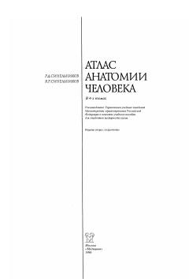

САInson anatomiyasi atlasining ichki a'zolar va bezlarga bag'ishlangan ikkinchi tomi.
Ushbu atlasning ikkinchi tomida ichki a'zolar, jumladan ovqat hazm qilish va nafas olish tizimlari, siydik-tanosil apparati hamda ichki sekretsiya bezlari haqida batafsil ma'lumot berilgan. Shuningdek, organlarning rivojlanishi va yosh xususiyatlari, xalqaro anatomik nomenklaturaga mos atamalar o'rin olgan. Kitob tibbiyot oliy o'quv yurtlari talabalari va mutaxassislar uchun mo'ljallangan.